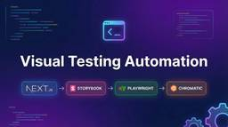
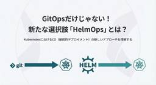
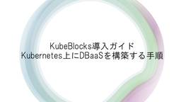
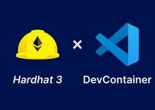
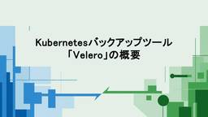
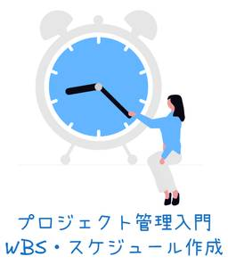
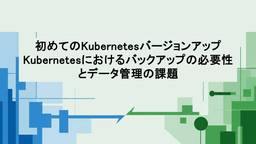

SIOS Tech Lab
https://tech-lab.sios.jp
サイオステクノロジーのエンジニアが クラウド、OSS、認証に関する様々な情報を提供します。
フィード

Next.js + Storybook + PlaywrightをChromaticでビジュアルテスト自動化する
SIOS Tech Lab
PS-SLの佐々木です。 アドベントカレンダー13日目になります この記事では、Next.js 14プロジェクトにStorybookとPlaywright E2Eテストを導入し、Chromaticを使ってGitHub A ...Next.js + Storybook + PlaywrightをChromaticでビジュアルテスト自動化する first appeared on SIOS Tech Lab.
16時間前

GitOpsだけじゃない！新たな選択肢「HelmOps」とは？
SIOS Tech Lab
はじめに こんにちは、サイオステクノロジーの小野です。SIOS Tech Labアドベントカレンダー12日目の投稿です。 「SIOS社員が一年で学んだこと」がアドベントカレンダーのテーマですが、私はこの一年間〇〇Opsと ...GitOpsだけじゃない！新たな選択肢「HelmOps」とは？ first appeared on SIOS Tech Lab.
2日前
自宅にデジタルサイネージを導入しました 6
6
SIOS Tech Lab
サイオステクノロジー武井です。今回は自宅にデジタルサイネージを導入した話をします。仕事とはまったく関係ないです。 デジタルサイネージとは？ デジタルサイネージとは、電子的な看板のことです。店舗や公共の場で情報を表示するた ...自宅にデジタルサイネージを導入しました first appeared on SIOS Tech Lab.
3日前

KubeBlocks導入ガイド：Kubernetes上にDBaaSを構築する手順 1
SIOS Tech Lab
はじめに こんにちはSIOS Tech Labアドベントカレンダー11日目になります。私は現在KubeBlocksの調査検証をしており、それについての解説ブログをシリーズとして投稿しています。第1回はKubeBlocks ...KubeBlocks導入ガイド：Kubernetes上にDBaaSを構築する手順 first appeared on SIOS Tech Lab.
3日前
チンパンジーでもわかるGit/Github【初心者向け】 6
SIOS Tech Lab
こんにちは、チンパンジー配属の永田です。 みなさんは「自分って、チンパンジーなんだ」と思ったことがありますか？ 僕はあります。 新卒1年目のころ、「サルでもわかるgit」を読みました。 わかりませんでした。 ...チンパンジーでもわかるGit/Github【初心者向け】 first appeared on SIOS Tech Lab.
3日前

Hardhat 3 と Dev Container で Solidity の開発
SIOS Tech Lab
久々のブログです。菊地啓哉です。 Dev Container は便利ですよね。開発を始めようとした時に、まずは Dev Container で環境をつくるのが習慣になってきました。 今回は（気持ちは）自力で Hardha ...Hardhat 3 と Dev Container で Solidity の開発 first appeared on SIOS Tech Lab.
3日前

Kubernetesバックアップツール「Velero」の概要
SIOS Tech Lab
はじめに 前回はKubernetesのバックアップは、etcdとPV/PVCの二軸で、セットで行うことが重要であることを解説しました。しかし、ステートフルなアプリケーションのバージョンアップでは、データの互換性と整合性が ...Kubernetesバックアップツール「Velero」の概要 first appeared on SIOS Tech Lab.
3日前

プロジェクト管理入門 – WBS・スケジュール作成
SIOS Tech Lab
1. 今回の投稿について こんにちは、サイオステクノロジーの安藤 浩です。SIOS Tech Labアドベントカレンダー10日目の投稿です。技術よりというよりマネジメントよりの内容で投稿します。私は開発も行いますが、プロ ...プロジェクト管理入門 – WBS・スケジュール作成 first appeared on SIOS Tech Lab.
4日前

【Kong初心者向け】Canary Release Pluginの使い方
SIOS Tech Lab
「SIOS社員が今年一年で学んだこと」アドベントカレンダー9日目です。 最近少し苦戦した、Kongの小ネタを紹介させていただきます。 想定状況 旧サービスから新サービスに移行するにあたって、まずは一部のユーザーにのみ公開 ...【Kong初心者向け】Canary Release Pluginの使い方 first appeared on SIOS Tech Lab.
5日前

初めてのKubernetesバージョンアップ：Kubernetesにおけるバックアップの必要性とデータ管理の課題
SIOS Tech Lab
はじめに 前回はダウンタイムを最小限に抑えるBlue/Greenデプロイ戦略について紹介しました。これは旧環境（Blue）と新環境（Green）を完全に分離して用意し、外部からのトラフィックを一瞬でGreenに切り替える ...初めてのKubernetesバージョンアップ：Kubernetesにおけるバックアップの必要性とデータ管理の課題 first appeared on SIOS Tech Lab.
5日前